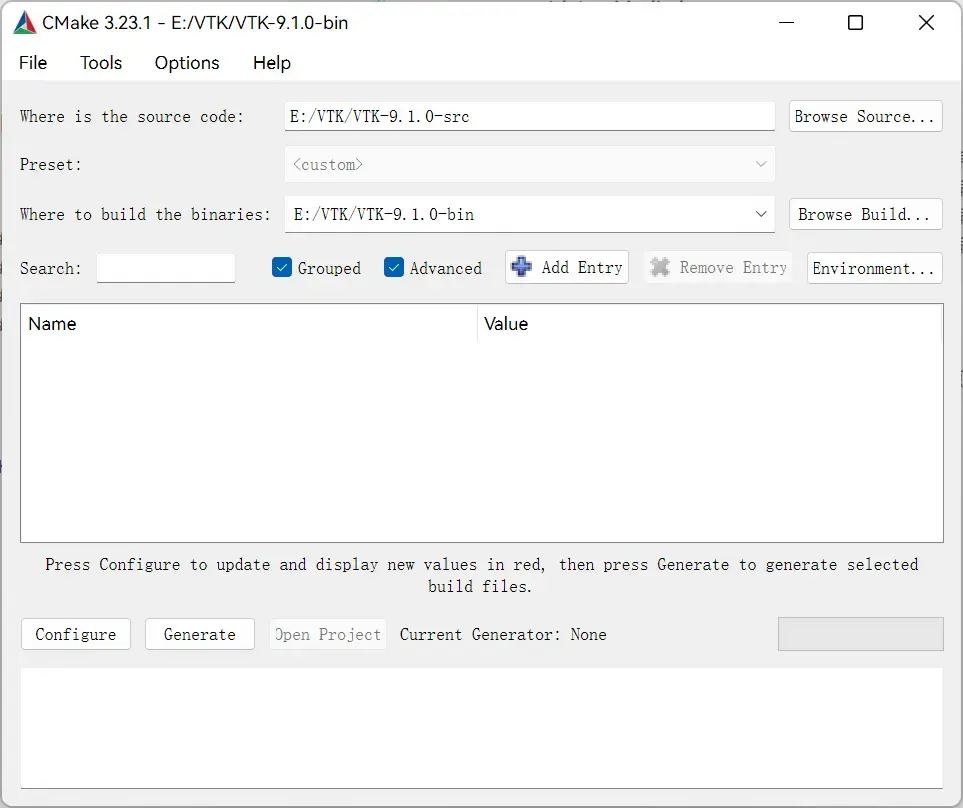
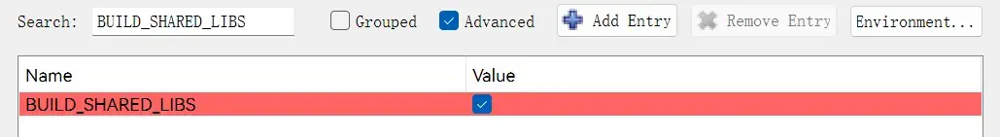
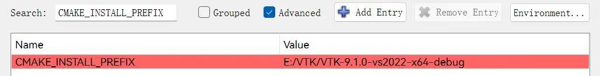
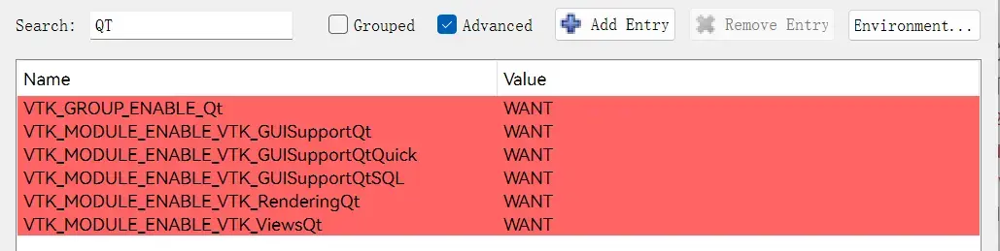
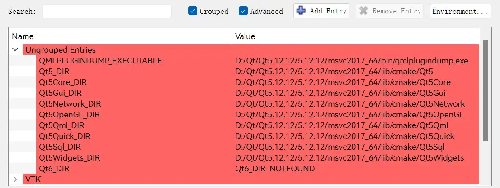
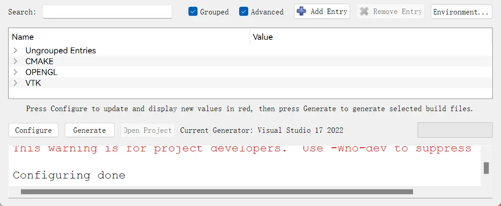
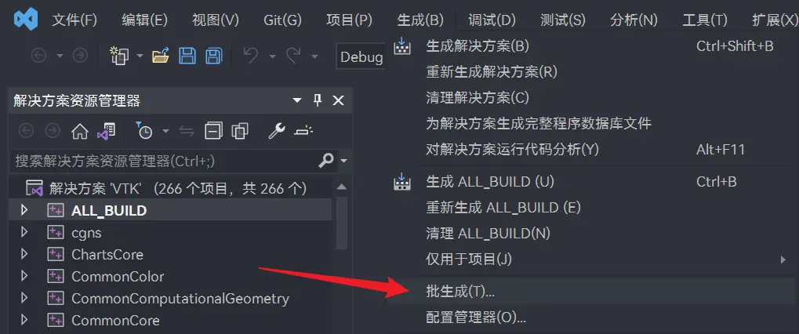
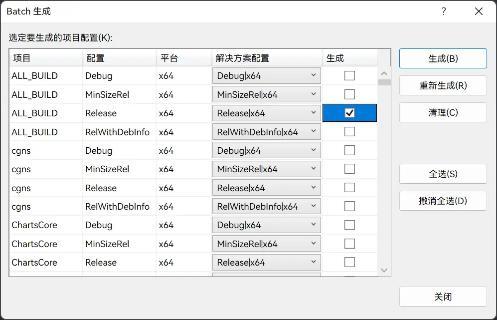
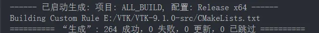
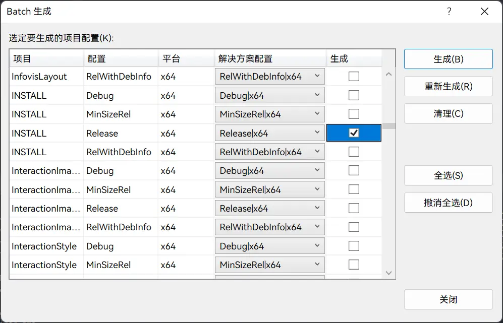

VTK9.1.0 + VS2022 + Qt5.12 编译
本文最后更新于：5 天前
本文在 Windows11 平台使用 Visual Studio 2022 编译 VTK 9.1.0。
前置条件
本文所需文件或工具：
| 文件或工具 | 版本 | 网址 |
|---|---|---|
| VTK 源码 | 9.1.0 | https://vtk.org/download/ |
| Visual Studio 2022 | 17.2+ | https://visualstudio.microsoft.com/downloads/ |
| CMake | 3.23.1 | https://cmake.org/download/ |
| Qt | 5.12 | https://www.qt.io/download |
注意：所需工具均为 64 位。
编译前准备
在编译之前先准备好编译过程中所需的目录。目录结构如下：
1 | |
将下载的 VTK 源码放在 VTK-9.1.0-src 文件夹下。
CMake 编译
打开 CMake (cmake-gui)，设置 VTK 源码和生成的二进制路径，点击 Configure。

在配置对话框，选择 Visual Studio 17 2022，其他保持默认，点击 Finish。

在配置完成后，会出现一些红色条目，表示需要进一步处理，这是正常现象，无需担心。
在左上角搜索框搜索 BUILD_SHARED_LIBS，将其勾选。此项的作用是生成动态共享库 DLL。

搜索 CMAKE_INSTALL_PREFIX，设置为 VTK 库要安装的位置，即 VTK 编译后的库文件位置。由于该项在设置后不可改变，因此为了可以同时生成 Debug 和 Release 两个版本，可以将该项设置为 VTK-9.1.0-vs2022-x64-debug 文件夹的路径。因为生成的库文件总是在 VTK-9.1.0-vs2022-x64-debug 文件夹，这样我们只需先生成 Release 模式下的库文件，然后将文件剪切到 VTK-9.1.0-vs2022-x64-release 文件夹，之后再生成 Debug 模式下的库文件即可。

搜索 QT，将所有条目设为 Want，点击 Configure。

在配置完成后，勾选 Grouped 和 Advanced。之后在 Ungrouped Entries 分组中选择 Qt5 的位置，路径为 Qt_DIR/5.12.0/msvc2017_64/lib/cmake/.*，如下图所示（一般情况下，CMake 会自动填入）。

搜索 VTK_QT_VERSION，设置为 5，点击 Configure。

在配置完成后，所有条目均为白色，说明没有错误。如果还是有红色，请返回检查，直到全白。点击 Generate。

在生成完成后，所有条目均为白色，说明没有错误。点击 Open Project，打开 VS2022。

VS2022 编译
选择「生成 -> 批生成」。

在「Batch 生成」对话框，勾选 ALL_BUILD Release x64，点击生成，生成大约需要 40 分钟。

等待生成完毕，之后再次进入「Batch 生成」对话框，取消勾选上述 ALL_BUILD Release x64，然后勾选 INSTALL Release x64，点击生成。


此时，VTK-9.1.0-vs2022-x64-debug 文件夹内就是 VTK 9.1.0 Release 版本的库文件，将其剪切到 VTK-9.1.0-vs2022-x64-release 文件夹，就完成了 Release 版本的构建，最终 VTK-9.1.0-vs2022-x64-release 目录结构如下：
1 | |
生成 Debug 模式下的库文件和上述过程相似。首先，取消勾选 INSTALL Release x64，然后勾选 ALL_BUILD Debug x64 和 INSTALL Debug x64，点击生成，就会在 VTK-9.1.0-vs2022-x64-debug 文件夹里生成库文件。
在 Qt5 中使用
可以使用 QVTKOpenGLNativeWidget 部件，具体操作请查看「参考」。